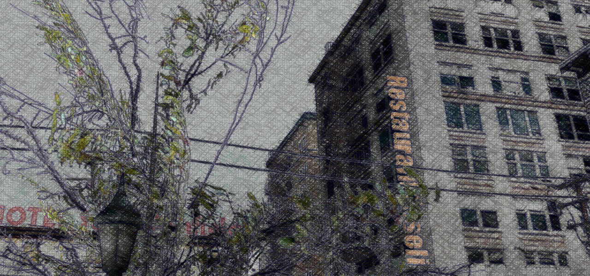
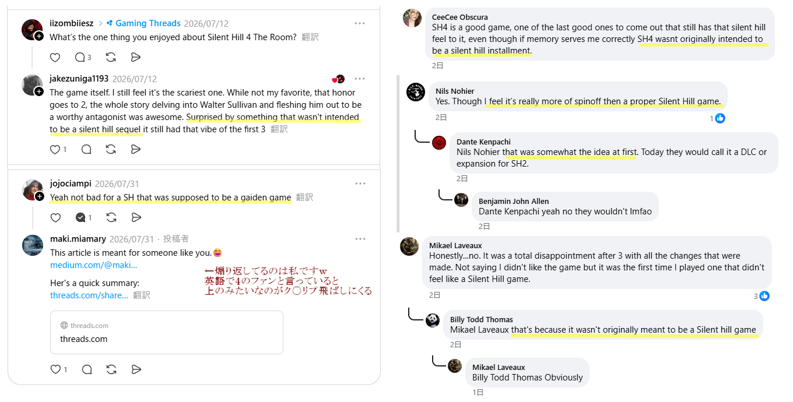
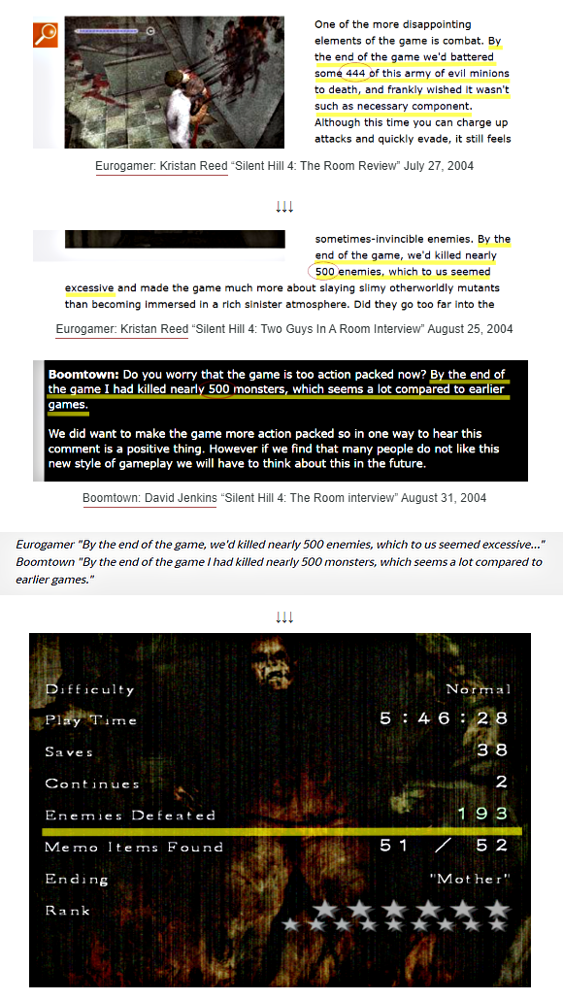

[Japanese] 日本語環境の人へ

ここはMediumとDeviantArtに書いたサイレントヒル（特に4）関連の記事のアーカイブです。他のページは英語なので翻訳して見てください。詳しい内容は下記にそれぞれ説明しましたが、これらを残す意図は、海外に残る日本にはない説の訂正が一番、そして古い情報をまとめて残すことなどです。日本のはてなブログでも書いていますが、ここも含めて全てのサイトは非営利の無料アカウントで、長く残るであろう場所を選んでいます。

Medium
海外では、日本人開発者が公式情報でもインタビューでも日本では一度も言ったことのない「サイレントヒル4はRoom 302という別ゲーム/スピンオフだったのを（売るため）サイレントヒルシリーズにした」という説が定着しています。ほとんどの日本人は知らないと思います。だってこのゲームが作られた日本にはそんな説はなかったから。「インタビューで開発者が言った」と書いたのは海外記者だから。私も知ったのはGOG版が出てからです。
調べるとこれは欧米でのリリース前のほぼ同時期にEurogamerとBoomtownの2記事がインタビューとして紹介し、信じたファンが広めた20年以上前の古い説です。しかも日本では聞いたことがないばかりか公式情報とも矛盾する。なので私はそれらを調べて記事の不審点を英語でまとめました。それがMediumの下記の3記事になります。全てURL等出典を挙げています。
個人的にはこの説は、イギリスの白人記者のちょっとした数字稼ぎとアジア蔑視、日本人開発者ならどうせ国へ帰ってしまえば抗議しないだろうという意図で（実際そうなった）「面白く」盛った記事が、鵜呑みにしたアホな海外ファン勢によって燃えてしまって、定着したのが全てだと思っています。

しかもこれは本丸のX（旧twitter）が入ってません。あちらで検索したら追い切れないくらい毎日見つかることでしょう。
この説は20年以上経った今でも海外では普通に語られ続けています。ファンもアンチも別ゲームユーザーもよく知った話で、「cash grab」等というひどい煽りから、「4は別ゲームになるはずだったんだよね」等の小ネタのつもりの会話まで、今でもSNSでもよく見かけます。けれど後者であってもそのルーツは作品や開発者に対するリスペクトの欠けた記事が発端です。
なので、特に日本人にはこの説を信じてほしくないのです。そして無邪気にこの説を口にする海外の人たちにも背景を知ってもらうために英語でアーカイブも残しています。
3記事のサマリー
Room 302説の元の英語2記事を調べた結果、Eurogamerの記事は同記者の前の記事より数字を増やして「敵が多すぎる」と不満を挙げていること、その数が別媒体別記者のBoomtownとも一致していること、そもそもそれらは平均の倍で一致するのも不自然なことなどに気づきました。
さらにこれらの記事がインタビューであるのにどちらも写真がないことや、Eurogamerが当時コンテンツ配信サービスをやっていて該当記者もクレジットされていることなども突き止めました。つまりは大手から弱小媒体のBoomtownへデータが提供された可能性が高い。海外ファンが「2記事が同じことを言っている」と広めたこの説は、数字を増やして不満を言うような記者が書いた信憑性が疑われる記事の中の文言であり、両社同一ソースなのではないか。
更には同時期の同じ開発者たちへの第3のインタビュー（写真もあり、上記のような発言はない）とも比較しました。日本の公式サイトや公式ガイドの正しい情報も併せて英訳して載せています。

ファンコミュニティの人々、Fandom管理人や古参ファンの人たちに、上記の明らかに不自然な点を告げてもまだ彼らは英語記事を信じました。何故ならそれらが英語で書かれていて、20年以上定着している話だから。譲歩してもせいぜいが、日本の公式情報は正しいと思うけど、この英語の記事もきっと正しいよ、というグレー案でした。
そこで私は海外のユーザーはそもそも英語記事を疑わないのではと推測しました。日本人ならまず思うような「開発者がリリース前に自作のネガキャンするはずがない、記事がおかしい」という視点がない。しかし彼らも逆だったら、日本人記者のインタビューで白人開発者がネガティブな発言をしたと言って写真もなかったら、きっと疑っただろう。そんな無意識のバイアス、更に日本の抗議より沈黙を選ぶ文化が彼らには同意に見えたのではなど、文化の違いも説明しました。
更に実際の記事も、噂を記者が訊ねた形で記者自身は安全な位置にいて、インタビューの該当部分だけ「言った」ではなく「認めた」「うなずいた」という、通訳を介していたら抗議しづらい形になっていること、そもそも全世界でこの二社だけが入手した独占告白であり今も語り継がれるようなセンセーショナルな話なのに記事の見出しや本文でそれらをアピールしていない不自然さ等についても指摘しました。実際これらの記事には、日本の公式情報にはない内容を既成事実のようにさりげなく盛り込んで誤認させるような手法もありました。
上記2記事に派生した、海外有名ファンサイトにのみ現存する記事があります。それは上とは別の開発者へのインタビューで、彼も「サイレントヒル4はシリーズになるはずではなかった」と言ったとされています。しかし出典を調べても、写真がないどころか、どこの国のどんな媒体だったのかすらわかりませんでした。（後にその有名ファンサイト自身も、この記事は出典不明で彼らは別のファンサイトに書かれていた内容を転載しただけと認めて注釈を加えました）
この記事内で開発者がサイレントヒル3について語っていた箇所については、SNSでファンが別の有名開発者に質問したことがありました。その時のその方の答えは「それは事実とは違う。何故なら彼は3に全く関わっていなかった」です。つまりは関わっていない開発者がもっともらしく語っているインタビューでした。4に関しても言うまでもなく信憑性のない記事です。
英語圏に今も出回るこのような怪しい記事や噂。それらを追うと、昔から日本の公式情報と同じことを言っている、真っ当なインタビューや記事もたくさんあったのに、センセーショナルなゴシップを広めたのはファンコミュニティであったという皮肉も当時のログから見えてきます。中には「今は消されているけれど、公式サイトにも書いてあった」というような荒唐無稽な発言で記事を擁護した人たちもいました。そうやってエコーチェンバーが形成され、この説を広め、定着させました。そんな流れを記録しています。
DeviantArt
こちらはオタクサイトです。主にサイレントヒル4のイベントトリガーや、カットシーン、テクスチャを解読してみたり、日本の文化背景を英語で説明したりしています。具体的には、302号室のキッチンやバスルームの小物をストーカーしてみたり、301号室のレアなポ○ノ雑誌の表紙を拡大してどんな雑誌か検証したり、といったアホなことも含みますｗ
特定の怪異の発生条件をまとめたり、ゲームの背景の日本の怪談を説明したり、ビル乱立の世界の中華街の看板を解読したり。Fandomでもまとめてもらいましたが、日本に存在しない犠牲者16から21の被害者ファイルがかつて存在した翻訳有名ファンサイトの二次創作だったことを調べたりもしています。さらには4以外のものも含めて古い日本のインタビューも紹介しています。
その他、外部サイト／日本語
はてなブログでは、日本語での上のMediumのサマリーの他、古い公式サイトの情報や、イベントレポート等も書いています。連絡先はフォームを置くとスパムだらけになるので定めていません。 DeviantArtか、どこかのSNSで探してください…。日本語可能です。